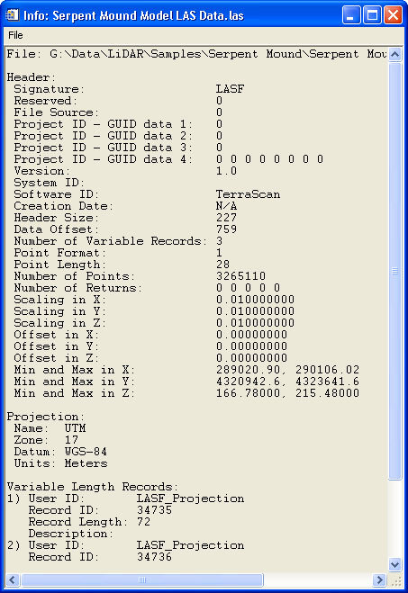

Using "Get LAS File Info"
This tool is used to display information about an LAS file.
Usage:
- Select the file of interest.
- A text window will display information about the selected file:
- All of the information in the file header is displayed.
- If the file contains embedded projection information, it is displayed.
- Any variable length records contained in the file are displayed.
Back to LidarTools home page.
Notes:
- This tool requires data that are in the LAS format.
Comments?
• Idaho State University • Boise Center Aerospace Laboratory • 322 E. Front Street #240 • Boise, Idaho • 83702 •